红黑树和AVL树相比查询性能好还是插入性能好一些？
| 操作 | AVL 树 | 红黑树 |
|---|---|---|
| 查询 | ⭐⭐⭐⭐⭐（更快） | ⭐⭐⭐⭐ |
| 插入/删除 | ⭐⭐⭐ | ⭐⭐⭐⭐⭐（更快） |
| 平衡开销 | 高 | 低 |
1、查询性能的对比：
- AVL 树：AVL 树是严格的平衡二叉搜索树，它要求每个节点的左右子树的高度差（平衡因子）不超过 1。这种严格的平衡特性使得 AVL 树的高度始终保持在 O(log n)，其中 n)是树中节点的数量。在进行查询操作时，由于树的高度相对较低且较为均匀，所以查找任意节点的时间复杂度稳定为 O(log n)。这意味着在理想情况下，AVL 树的查询效率非常高，能快速定位到目标节点。
- 红黑树：红黑树是一种弱平衡的二叉搜索树，它通过颜色标记和特定的规则（如每个节点要么是红色，要么是黑色；根节点是黑色；每个叶子节点（NIL 节点，空节点）是黑色；如果一个节点是红色的，则它的两个子节点都是黑色的；对每个节点，从该节点到其所有后代叶节点的简单路径上，均包含相同数目的黑色节点）来维持大致的平衡。红黑树的高度通常比 AVL 树略高，其高度上限为 2log(n + 1)，因此查询操作的时间复杂度同样为 (log n)，但在实际应用中，由于树的高度相对较高，其查询性能可能会略逊于 AVL 树。
在查询性能上，AVL 树由于其严格的平衡特性，表现会稍好于红黑树，但差距通常不大。
2、插入性能的对比：
- AVL 树：在插入新节点后，AVL 树可能会破坏原有的平衡结构，需要通过旋转操作（单旋转或双旋转）来重新平衡树。由于 AVL 树对平衡的要求非常严格，插入操作后可能需要进行多次旋转来恢复平衡，特别是在树的高度较高时，插入操作可能会引发较多的旋转操作，导致插入性能受到一定影响。插入操作的平均时间复杂度虽然也是 O(log n)，但由于旋转操作的开销，实际插入效率相对较低。
- 红黑树：红黑树在插入新节点后，同样可能会破坏树的平衡，但它只需要进行少量的颜色调整和最多两次旋转操作就能恢复平衡。红黑树的平衡规则相对宽松，使得在插入操作时不需要像 AVL 树那样频繁地进行旋转操作，因此插入性能相对较好。插入操作的平均时间复杂度同样为 O(log n)，但由于减少了旋转操作的次数，实际插入效率更高。
在插入性能上，红黑树由于其弱平衡特性，表现优于 AVL 树。
在实际应用中，如果查询操作频繁，对查询性能要求较高，且插入和删除操作相对较少，可以选择 AVL 树；如果插入和删除操作较为频繁，对插入性能有较高要求，同时查询性能也能接受一定的损耗，则红黑树是更好的选择。例如，Java 中的 TreeMap 和 TreeSet 底层使用的就是红黑树，以兼顾插入、删除和查询操作的性能。
为什么要用红黑树而不是平衡二叉树？
- 平衡二叉树追求的是一种 “完全平衡” 状态：任何结点的左右子树的高度差不会超过 1，优势是树的结点是很平均分配的。这个要求实在是太严了，导致每次进行插入/删除节点的时候，几乎都会破坏平衡树的第二个规则，进而我们都需要通过左旋和右旋来进行调整，使之再次成为一颗符合要求的平衡树。
- 红黑树不追求这种完全平衡状态，而是追求一种 “弱平衡” 状态：整个树最长路径不会超过最短路径的 2 倍。优势是虽然牺牲了一部分查找的性能效率，但是能够换取一部分维持树平衡状态的成本。与平衡树不同的是，红黑树在插入、删除等操作，不会像平衡树那样，频繁着破坏红黑树的规则，所以不需要频繁着调整，这也是我们为什么大多数情况下使用红黑树的原因。
红黑树说一下，跳表说一下？
红黑树（Red-Black Tree）是一种自平衡的二叉搜索树，它在插入和删除操作后能够通过旋转和重新着色来保持树的平衡。红黑树的特点如下：
- 每个节点都有一个颜色，红色或黑色。
- 根节点是黑色的。
- 每个叶子节点（NIL节点）都是黑色的。
- 如果一个节点是红色的，则它的两个子节点都是黑色的。
- 从根节点到叶子节点或空子节点的每条路径上，黑色节点的数量是相同的。
红黑树通过这些特性来保持树的平衡，确保最长路径不超过最短路径的两倍，从而保证了在最坏情况下的搜索、插入和删除操作的时间复杂度都为O(logN)。
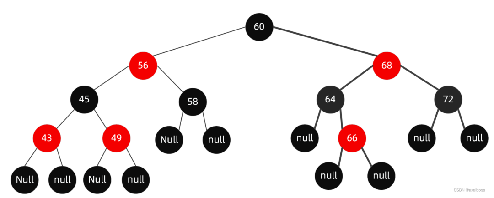
跳表（Skip List）是一种基于链表的数据结构，它通过添加多层索引来加速搜索操作。
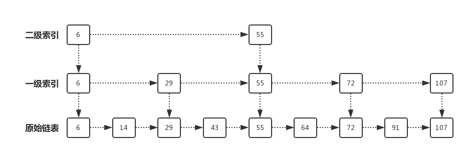
跳表的特点如下：
- 跳表中的数据是有序的。
- 跳表中的每个节点都包含一个指向下一层和右侧节点的指针。
跳表通过多层索引的方式来加速搜索操作。最底层是一个普通的有序链表，而上面的每一层都是前一层的子集，每个节点在上一层都有一个指针指向它在下一层的对应节点。这样，在搜索时可以通过跳过一些节点，直接进入目标区域，从而减少搜索的时间复杂度。
跳表的平均搜索、插入和删除操作的时间复杂度都为O(logN)，与红黑树相比，跳表的实现更加简单，但空间复杂度稍高。跳表常用于需要高效搜索和插入操作的场景，如数据库、缓存等。
你知道什么地方用了红黑树和跳表吗？
- epoll 用了红黑树来保存监听的 socket
- redis 用了跳表来实现 zset
10. c++中 stl 中map的插入时间复杂度是多少？
std::map 是基于红黑树实现的，红黑树的插入时间复杂度是 O(logn)。
红黑树，b树，b+树有什么区别？
| 特性 | 红黑树 | B树 | B+树 |
|---|---|---|---|
| 节点容量 | 每个节点存1个键值对 | 每个节点存多个键值对 | 非叶节点存多个键，仅叶节点存值 |
| 分支数 | 二分叉（二叉树） | 多分叉（多路树） | 多分叉，叶节点额外链表连接 |
| 数据存储位置 | 所有节点均存数据 | 所有节点均存数据 | 数据仅存于叶节点 |
| 平衡维护方式 | 颜色标记与旋转 | 节点分裂/合并 | 节点分裂/合并 |
| 查找稳定性 | 查到即返回 | 查到即返回 | 必须查至叶节点 |
核心区别：
-
查询效率：红黑树单点查询稳定在
O(log n)，但树深度较高（如1亿数据需约30次查找）。B/B+树：树高更低（相同数据量下树高度可能仅为红黑树的1/3），显著减少磁盘I/O次数。 -
范围查询：B+树的叶子节点通过指针形成链表，范围遍历效率极高（如查询
[A, Z]只需找到起点后顺序遍历）。B树/红黑树：范围查询需回溯父节点或频繁调整指针，效率较低。 - 插入/删除维护成本：红黑树需频繁旋转和变色，维护规则复杂。B/B+树：通过批量调整（分裂/合并节点）减少频繁操作，更适合海量数据。
- 场景选择：如果数据在内存中 + 高频增删 ，选择红黑树更合适，如果数据在磁盘 + 随机/范围查询均需 ，选择B+树更合适。
红黑树和b➕的区别？
红黑树是一种自平衡的二叉查找树
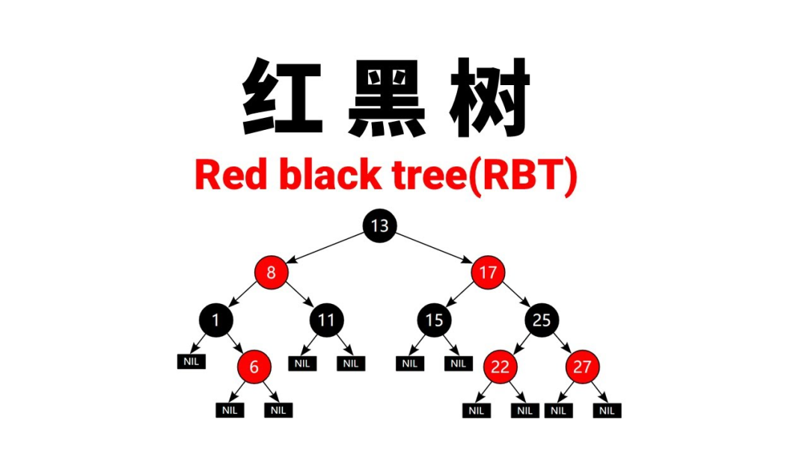
B+树是一种多路平衡查找树

对于有 N 个叶子节点的 B+Tree，其搜索复杂度为O(logdN)，其中 d 表示节点允许的最大子节点个数为 d 个。
在实际的应用当中， d 值是大于100的，这样就保证了，即使数据达到千万级别时，B+Tree 的高度依然维持在 3~4 层左右，也就是说一次数据查询操作只需要做 3~4 次的磁盘 I/O 操作就能查询到目标数据。
而红黑树的每个父节点的儿子节点个数只能是 2 个，意味着其搜索复杂度为 O(logN)，这已经比 B+Tree 高出不少，因此红黑树检索到目标数据所经历的磁盘 I/O 次数要更多。
二叉树搜索最坏的时间复杂度，为什么会这样？以及用什么结果解决？
**当每次插入的元素都是二叉查找树中最大的元素，二叉查找树就会退化成了一条链表，查找数据的时间复杂度变成了 O(n)**，如下动图演示：
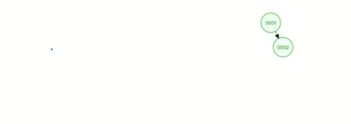
二叉查找树由于存在退化成链表的可能性，会使得查询操作的时间复杂度从 O(logn) 升为 O(n)。
为了解决二叉查找树会在极端情况下退化成链表的问题，后面就有人提出平衡二叉查找树（AVL 树）。
主要是在二叉查找树的基础上增加了一些条件约束：每个节点的左子树和右子树的高度差不能超过 1。也就是说节点的左子树和右子树仍然为平衡二叉树，这样查询操作的时间复杂度就会一直维持在 O(logn) 。
下图是每次插入的元素都是平衡二叉查找树中最大的元素，可以看到，它会维持自平衡：
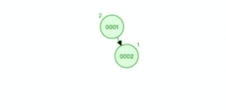
除了平衡二叉查找树，还有很多自平衡的二叉树，比如红黑树，它也是通过一些约束条件来达到自平衡，不过红黑树的约束条件比较复杂。下面是红黑树插入节点的过程，这左旋右旋的操作，就是为了自平衡。
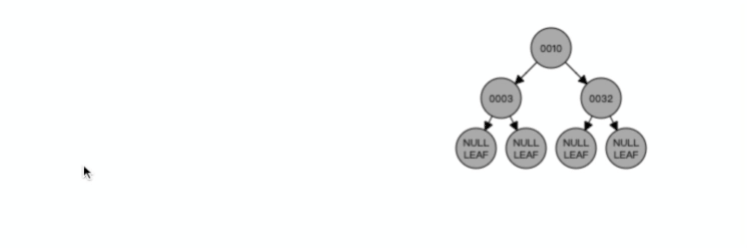
avl树和红黑树的区别？
- 平衡二叉树追求的是一种 “完全平衡” 状态：任何结点的左右子树的高度差不会超过 1，优势是树的结点是很平均分配的。这个要求实在是太严了，导致每次进行插入/删除节点的时候，几乎都会破坏平衡树的第二个规则，进而我们都需要通过左旋和右旋来进行调整，使之再次成为一颗符合要求的平衡树。
- 红黑树不追求这种完全平衡状态，而是追求一种 “弱平衡” 状态：整个树最长路径不会超过最短路径的 2 倍。优势是虽然牺牲了一部分查找的性能效率，但是能够换取一部分维持树平衡状态的成本。与平衡树不同的是，红黑树在插入、删除等操作，不会像平衡树那样，频繁着破坏红黑树的规则，所以不需要频繁着调整，这也是我们为什么大多数情况下使用红黑树的原因。
红黑树插入的时间复杂度是多少？
红黑树平衡，插入、删除、查找操作的时间复杂度都是O(logn)。
说说红黑树
红黑树是一种自平衡的二叉查找树，
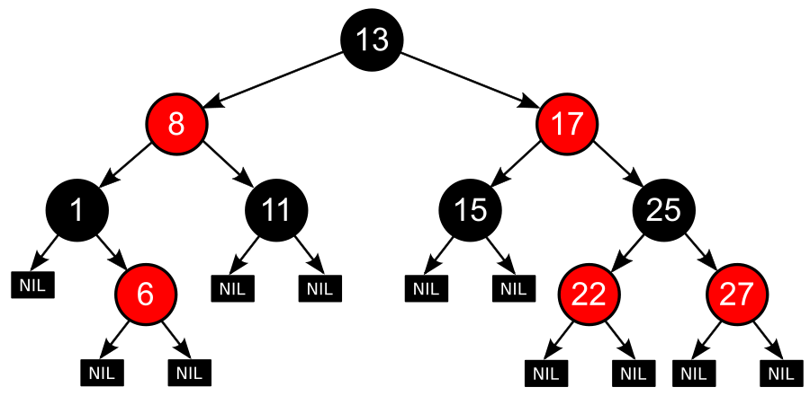
具有以下特点：
- 每个节点要么是红色，要么是黑色。
- 根节点是黑色。
- 每个叶子节点（NIL节点）是黑色。
- 如果一个节点是红色，则其子节点必须是黑色。
- 从任一节点到其每个叶子节点的所有路径都包含相同数目的黑色节点。
红黑树的自平衡性质可以保证在进行插入、删除等操作后，树的高度保持在O(log n)内，从而保持了较高的查找、插入和删除效率。
下面是红黑树插入节点的过程，这左旋右旋的操作，就是为了自平衡。

说说红黑树怎么左旋右旋
左旋和右旋是两种基本的旋转操作，用于保持红黑树的平衡。下面简单描述一下左旋和右旋的操作步骤：
左旋操作：
- 将当前节点的右子节点作为新的根节点。
- 将新根节点的左子节点移动为当前节点的右子节点。
- 如果当前节点有父节点，将当前节点的父节点更新为新根节点的父节点；否则，将新根节点设置为树的根节点。
- 更新新根节点和其子节点的父节点关系。
接下来看下图片展示，首先断开节点PL与右子节点G的关系，同时将其右子节点的引用指向节点C2；然后断开节点G与左子节点C2的关系，同时将G的左子节点的应用指向节点PL。
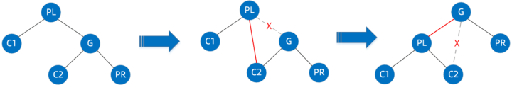
接下来再放下 gif 图，希望能帮助大家更好地理解左旋
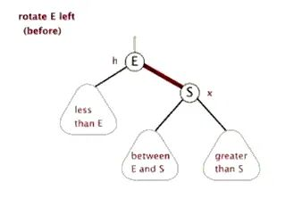
右旋操作与左旋操作对称，具体步骤如下：
- 将当前节点的左子节点作为新的根节点。
- 将新根节点的右子节点移动为当前节点的左子节点。
- 如果当前节点有父节点，将当前节点的父节点更新为新根节点的父节点；否则，将新根节点设置为树的根节点。
- 更新新根节点和其子节点的父节点关系。
首先断开节点G与左子节点PL的关系，同时将其左子节点的引用指向节点C2；然后断开节点PL与右子节点C2的关系，同时将PL的右子节点的应用指向节点G。
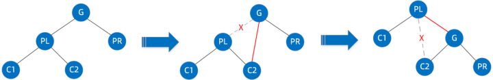
右旋的gif展示（图片来自网络）:
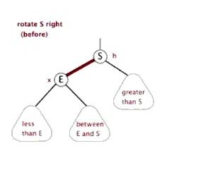